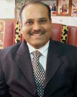

-
Profile

Dr. Kiran D. Patil
Title Professor Location E 203 Email kiran.patil@mitpune.edu.in Phone (020) 30273512 Website http://in.linkedin.com/in/kiranpatil101
An experienced, well trained and well rounded Chemical Engineer with recognized research expertise in reactive separations, Process Modeling & Simulation and industry implementation exposure and with administrative and organizational skills. Expertise in Modeling, Simulation of complex chemical engineering processes. His significant academic and research contributions are truly multidisciplinary covering Chemical (including engineering/technology), Petroleum, Petrochemical engineering, mathematical, and environmental sciences. The common theme that binds his contributions is experimental investigations, design of experiments, modeling and extensive application of commercial software in Chemical engineering such as Aspen Plus®, UNISIM™, and MATLAB® etc.
Education2011
PhD (Chemical Engineering)
University of Pune, (National Chemical Laboratory, Pune)
1999
M.E (Chemical Engineering)
Shivaji University, Kolhapur
1997
PG Diploma in Piping Design and Engineering ( Autonomous Course)
MAEER’s, MIT, Pune
1995
PG Diploma in Business Management and Administrations (Finance Management)
Shivaji University, Kolhapur
1994
B.E (Chemical Engineering)
Shivaji University, Kolhapur
Experience
1994-1995
POLYCHEM Industries, Mumbai
1995-2002
Lecturer in Chemical Engineering
2002-2008
Assistant Professor in Chemical Engineering
2008- Present
Professor in Chemical Engineering
Awards and Honors
> Stood Fifth in Shivaji University, Kolhapur for B.E. (Chemical Engineering), (1994)
> Gold Medal for securing 1st Position in Shivaji University, Kolhapur for M.E. (All Branches), (2000)
> Ideal Teacher Award, MAEER's, MIT Group of Institutions, Pune, India, (September 2009)
> Inclusion of Name in MARQUIS WHO'S WHO in the world 2011 (28th Edition), USA, (August 2010)
> Man of the Year, American Biographical Institute (ABI), Inc., CALIFORNIA, (July 2011)
> Top 100 Engineers 2011, International Biographical Center, Cambridge, England, (June 2011)
> Received Bharat Jyoti Award from India International Friendship Society, New Delhi (June 2013)
Recognized PG Teacher and PhD GuideField
University
Period
Chemical Engineering (Ph.D. Guide)
University of Pune
2012-2020
Petroleum Engineering (PG Teacher )
University of Pune
2008-2017
Number of PhDs/ PG Projects
PhD Chemical Engineering
2013
Studies in Ionic Liquids (Mrs. Gayatri Deshmukh, Ongoing, VIT, Pune Research Center)
2012
Biodiesel Production using Ultrasonic Processes ( Mr. Niraj Topare, Ongoing)
PG: M.E. Petroleum Engineering /Chemical Engineering
2012
Modeling and Simulation studies on Fluid Catalytic Cracking Unit (FCCU) using Aspen Plus. (Ongoing Work)
2013
Studies on Effect of Insulation Design on Thermal-Hydraulic Analysis: An Important Aspect in Subsea Pipeline Designing (Ongoing Work)
2013
Study for Minimizing Thermal and Pressure Expansion in Subsea Pipelines (Ongoing Work)
2013
Techno economical studies on Novel Continuous-Flow Reactor using Reactive Distillation Technology for Biodiesel Production (Ongoing work at Shivaji University, Kolhapur)
Publications(a) Summary of Research Publications:
> International paper published (04)
> National paper published (03)
> International paper presented in conferences (4)
> National paper presented in conferences (35)
(b) Books Publications:
Published following books for degree courses in Chemical Engineering/ Petrochemical/Petroleum/ Polymer Engineering and Biotechnology courses covering the syllabus of major Universities of India from Nirali Publishers, Pune, India. These books are considered as textbooks in syllabus of some Universities for their UG courses and are more popular in student communities from SARC countries.
1. Principles of Mass Transfer Operations, Volume-I (Seventh Edition)
2. Principles of Mass Transfer Operations, Volume, II (Sixth Edition)
3. Mechanical Operations: Principles and Applications (4th Edition)
4. Chemical Engineering Economics and Costing (In Press)A book on, “Mass Transfer and Separation Processes” PHI Learning / Tata McGraw Hill, New Delhi (under Preparation)
Research Grants received
> Modeling, Simulation Synthesis and Analysis for Reactive Distillation Processes for Esterification Reactions, BCUD, University of Pune, India, (File No: BCUD/578, dated, 10th January 2007, 2 years), Completed in February 2009, pp 100.
> Studies in Reactive Separations, All India Council for Technical Education (AICTE), New Delhi, India, under Research Promotion Scheme (RPS),(File No: 8023/BOR/RPS/-11/2006-2007, dated, 26th February 2007, 2 years), Completed in August 2009, pp 120.
> “Synthesis of Biodiesel from different feed stocks using Ultrasonic Process”, Received Grant from BCUD, University of Pune, India, Online Proposal No: 13ENG001475 ( August 2013)Professional Activities
(a) Consultancy Activities
> PFD and Pipe Sizing for a Coal-Bed Methane (CBM) Plant for Hydrocarbon Resources Development Ltd., Mumbai, India ( 2004)
> PFD and Pipe Sizing for Crude Separation Unit of the process system for BK EPS Plant (Client: Essar Oil Ltd) for Hydrocarbon Resources Development Ltd., Mumbai, India ( July 2007)
> VLE and Kinetic data generation forThermax India Limited, Pune, India (October 2008)
> BENEFUEL Project for Unitel Technologies, Inc., USA, (Modeling and Simulation work) in collaboration with Dr. B. D. Kulkarni, National Chemical Laboratory, Pune, India (October 2009)(b) Professional Association
> Content partner for Octave Simulation Services Pvt. Ltd, New Delhi (http://octavesim.com/tnt/) (Since August 2012)
> Chairman, Ph.D. (Chemical Engineering) admissions, Shivaji University, Kolhapur (2012)
> Member MPSC, Government of Maharashtra for selection of various technical post (2009-2012)
> Member, Advisory Board, World Center for Academic Excellence and Research (WCAER), Pune, India (Since March 2012) (http://www.wcaer.com/adb.html)
> Member , Advisory Committee &Chaired a Technical Session in Two Day’s International Conference on Contemporary Issues in Management & Technology(ICIMT-2011), held at Mahratta Chamber of Commerce Industries& Agriculture, Pune ( 2011)
> Consultant/Expert for Engineering Education portal: www.engineeringcampus.com of Sunind Systems (I) Ltd., Pune, (2001-2004)
> Reviewer, Journal of Advances in Engineering Science (2013)
(c) Invited Talks:
> Delivered invited talk on, “Separation Processes in Process Industries, (M.Sc. Industrial Chemistry Students) at MES, Garware College, Pune,(January 2013)
> Delivered invited talk on, “ Green Technologies for Sustainable Developments in Chemical Process Industries” at National Conference on Emerging Technologies for Sustainable Developments (NCET ’12), organized byDepartment of Technology, Shivaji University, Kolhapur,(December 2012)
> Delivered invited session on , “ Advance Separation Processes” in ONGC Chair National Level Workshop on “Process Modeling and Simulation” ( December 2012)
> Delivered invited talk on, “Multicomponent Distillation Column Design and Shortcuts Methods (M.Tech Students) at BVDU, College of Engineering, Pune (March 2010)
> Delivered invited talk on, “Reactive Distillation Technology for production of Industrial Chemicals on Industrial Scale” at TKIET, Warnanagar, Dist Kolhapur, ( August 2010)Portfolio at University Level
> Member, Faculty of Engineering (FoE), University of Pune (since August 2005 )
> Member, Board of Studies (BOS) in Petroleum Engg., University of Pune, (since August 2005 )
> Academic Research Coordinator (ARC), BCUD, University of Pune (2011-2014)
> Member, LIC Committee , University of Pune ( Since 2010)
> Subject Chairman for UG and PG courses in Chemical/ Petroleum/ Petrochemical Engineering(since 1997)
> Subject Expert/ VC Nominee for Selection of Teaching Post( Since 2008)
> Subject Expert for Ph.D.(Chemical Engineering) Progress Review ( 2012)
> Subject Expert for AVISHKAR , BCUD funded research projects (2011)
Portfolio at Institute Level
> Member, Governing Body, MAEER’s, MIT, Pune ( Since April 2012)
> Academic Research Coordinator for BCUD, University of Pune Research Projects (2011-2014)
> Member, Examination Committee, University of Pune
> Chairman, Dead Stock Verification for Library books and Journals (2010)
> Member, Central Time Table Committee (2001 to till this date)
> Co-Chairman, Website Updation Committee (2007 to this date)
> Co-Chairman, Discipline Committee, Annual Social Gathering ( Since 2007 )Interactions with Industry, research Organizations and Academic Institutes
> Frequently interacting with Industry for possibility of employment of students and consultancy assignments, and to interdisciplinary collaborations for research projects.